Dual Booting
About us
Society for Open Software (SOS) is a newly formed society with the purpose of increasing awareness of free and open source software and boost student engagement with the open source community.
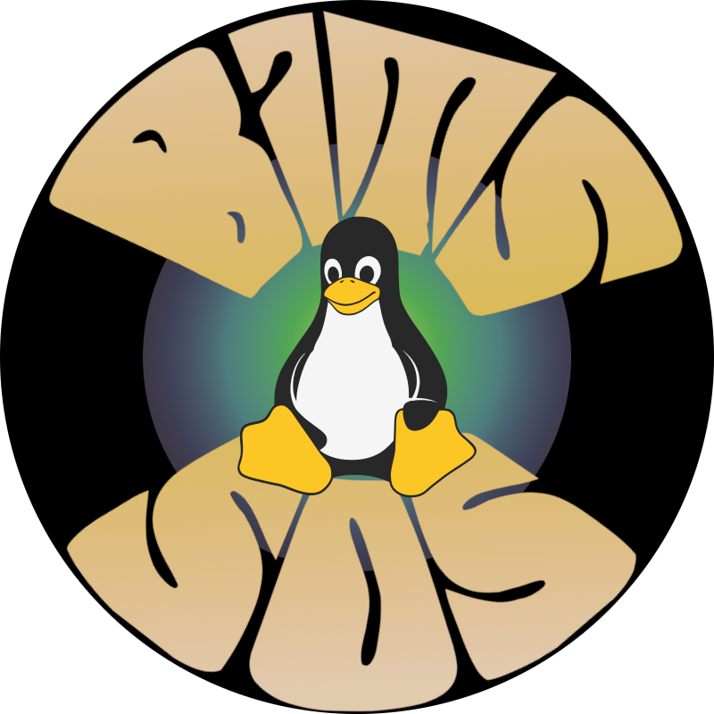
Introduction

What is dual booting?
Dual booting is having two operating systems running bare metal on the same computer
Why should you dual boot?
- Compartmentalization of tasks
- Ability to run applications exclusive to a given OS
Goals of this workshop
- Learning how to dual boot
- Picking the right distro for you
Dual-booting Linux and Windows
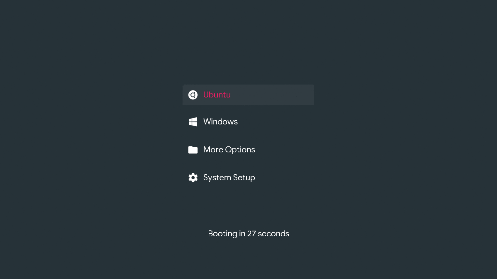
This workshop will focus on dual-booting Linux alongside Windows
MacOS users are welcome too, as long as they have x86 macs. M1 macs are locked down and have a broken user experience with linux.
But… why?
Windows PATHs are a nightmare to set and manage
To set up programming-related software, users often have to modify Window's PATH. This is widely agreed to be notoriously difficult, not to mention time-consuming. Package managers automatically set PATH variables when required on Linux, and it is much easier to do so manually when the need arises.
Windows has no package manager
Package managers are very useful for getting free software with one click. This includes applications such as VLC, Blender, Audacity etc. and programming software such as Python, GCC, Clang etc.
Pop!OS

Mint
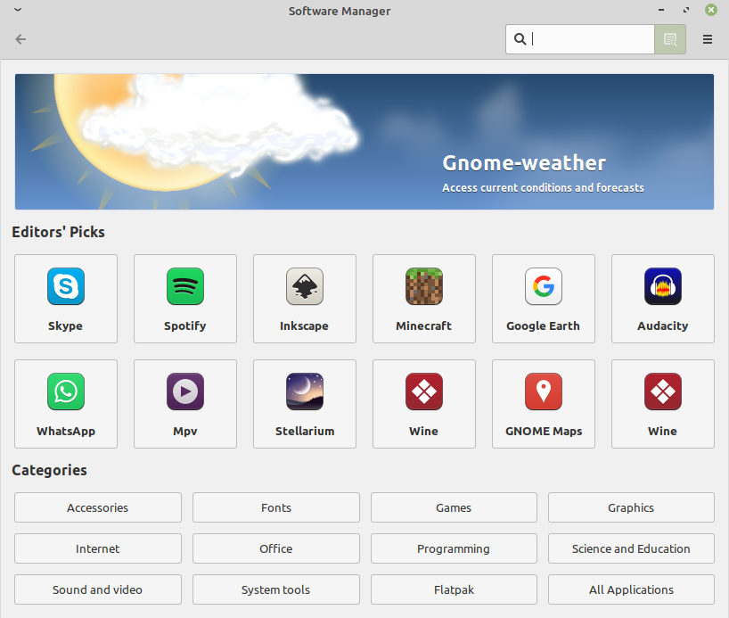
Linux cannot run games and CAD software reliably
If you wish to run any recent multiplayer game or AutoCAD, you will not be able to do so with Linux. Multiplayer games use kernel-level anticheat software, which just won't work on top of a translation layer like WINE. AutoCAD is too dependent on the .NET framework to work properly with WINE.
However…
Thanks to the SteamDeck, a lot of games have been ported to Linux. You can game on Linux, but it just won't support 100% of games.
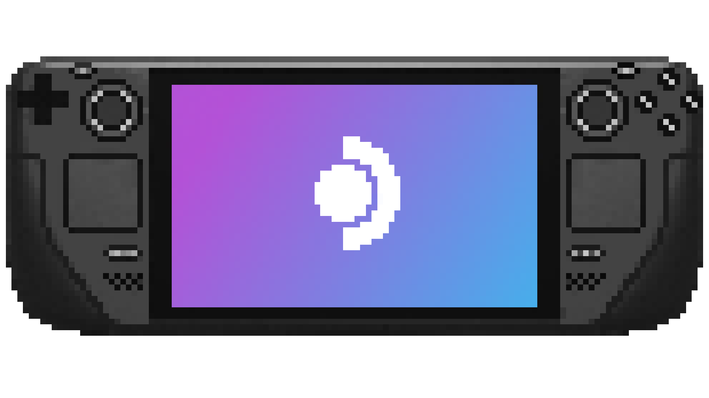
I do not require the latest AAA games or CAD software. Should I just use Linux?
Yes!
Linux has comparable or better performance in most tasks outside of those. Gaming on Linux has been getting better thanks to the SteamDeck incentivizing developers to make their games work on Linux.
Distributions
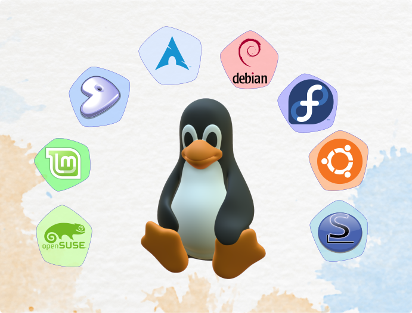
What is linux?
Linux is a kernel, the core component of the Operating System which manages interactions between the OS and hardware. When we say "Linux", it refers to a GNU system consisting of various components, including the linux kernel.
What is a linux distribution?
A distribution is an operating system made from a set of software, which includes the linux kernel alongside an init system, coreutils and often a package manager.
Parts of a distribution

init system
The init is the first process started by the system, and it continues running as a daemon till shutdown. If the kernel can't start it, it will result in a kernel panic. The init system is responsible for supervising processes and starting and stopping processes critical to the system.
SystemD
SystemD is the most commonly used init system. It comes with a bunch of utilities like a journaling system, which makes it very convenient to use. This, however, has drawn some criticism as it is doing more than what an init system should be doing, which is against the UNIX philosophy. It also starts slightly slower on older machines.
OpenRC (Gentoo)
OpenRC is often used by distros that wish not to implement SystemD. It is fast, lightweight and it does its job. Unfortunately, it does not provide daemon monitoring tools which are necessary for restarting crashed programs.
Runit (Void)
Runit quite similar to OpenRC, but it also provides daemon monitoring tools. This makes it a favorite of many, as it couples the minimalism of OpenRC and the convenience of SystemD.
Package manager
A package manager is an application that simplifies and automates the process of installing, upgrading and uninstalling software. Instead of downloading multiple EXEs and going through a long installation process for each and every application you want to use, you can install applications through a simple to use app store similar to Android/iOS.
apt (debian-based distros)
apt (and its derivatives) are used by debian and distros that derive from it. It is a simple package manager.
pacman (arch-based distros)
pacman is arch linux' package manager. It is much faster than apt, and provides more up-to-date packages. When coupled with an AUR manager like yay, it is the best package manager for normal use.
portage
Portage is Gentoo's package manager. It takes a source-based approach for most packages, and lets you customize every little detail of them prior to compilation.
XBPS
XBPS is Void's package manager. It's fast, lightweight and lets you switch between source-based and binary-based approaches.
nix and guix
Nix and Guix are functional package managers, that take a functional approach to package management: i.e. they treat packages as pure functions of their dependencies. This eliminates any side effects, and solves the problem of dependency hell.
Release style
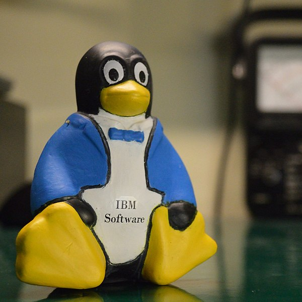
Point release
Point-release distros release stable versions of multiple packages once in a while. This makes the system stable and less prone to failure. The disadvantages of this approach are that packages are a version or two behind the latest and that installing the latest software for development purposes can get difficult.
Rolling release
Rolling-release distros ship new packages as soon as they are released. This means that you will be using the latest and greatest versions of your favorite software hot off the press. The disadvantages of this approach are that you can get stability issues and experience dependency hell if you install too many packages.
Desktop Environments
Desktop Environments are bundles of GUI programs that provide a full-desktop experience. These contain a Window Manager, various desktop utilities like taskbars and start menus and often come with GUI applications such as a notepad or a calendar.
KDE
KDE is a highly polished, cool-looking Desktop Environments. It comes loaded with tons of features and very slick animations. It uses qt for theming, which makes it look absolutely gorgeous. Windows 10 and 11 somewhat resemble KDE.
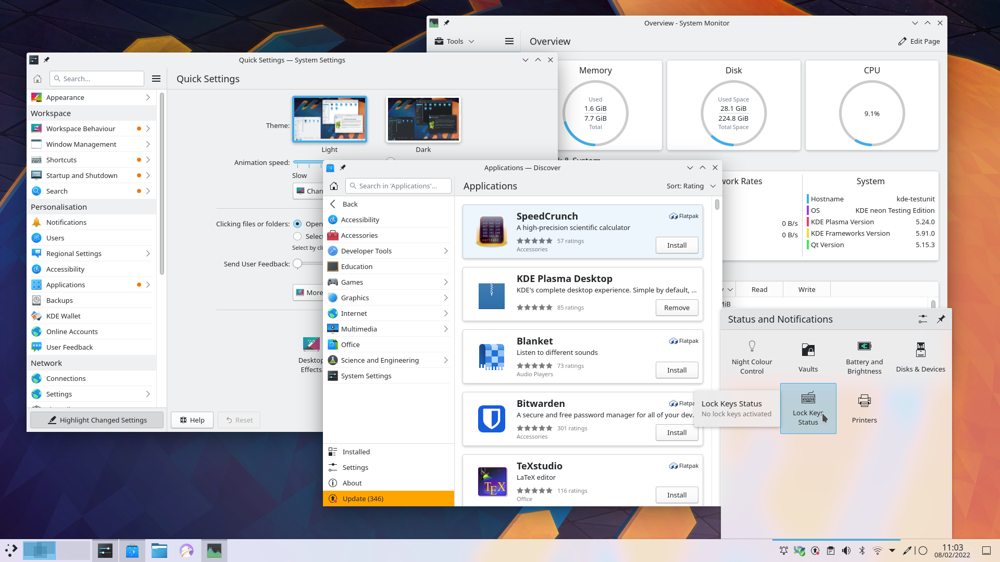
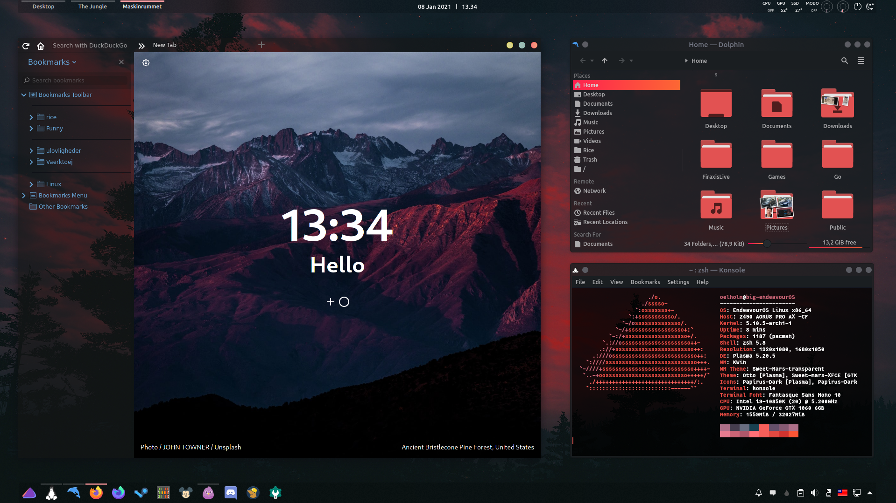
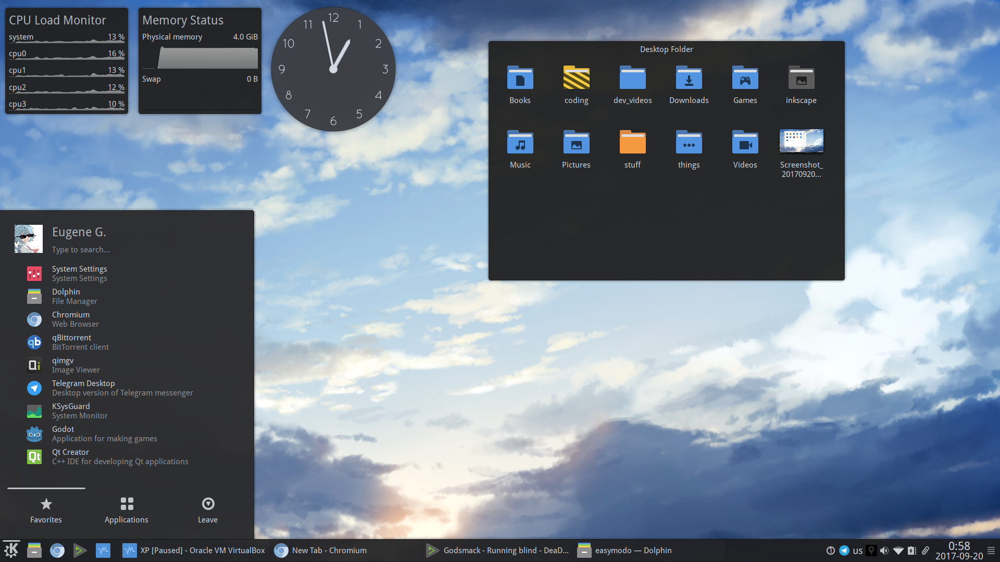
XFCE
XFCE is a fast, lightweight and highly customizable Desktop Environment. All its components are swappable and modular. It uses GTK3 for theming, and with a bit of tweaking provides a very comfortable experience. It somewhat resembles Windows 7.
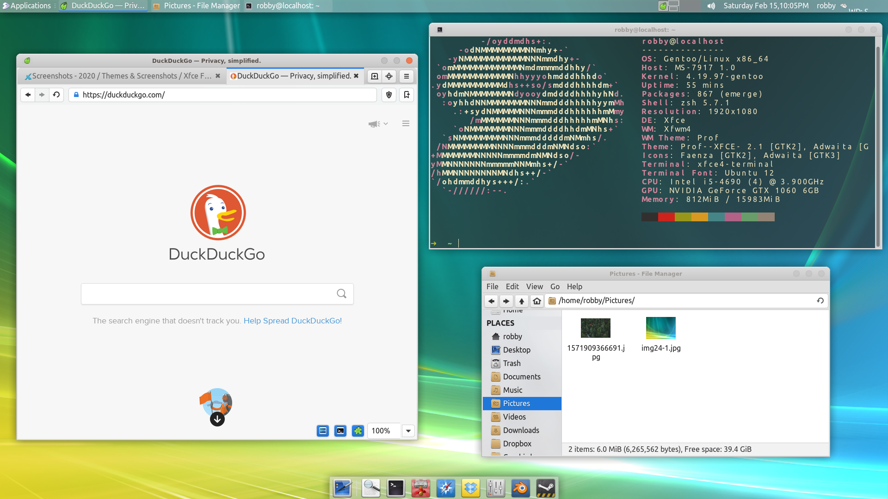
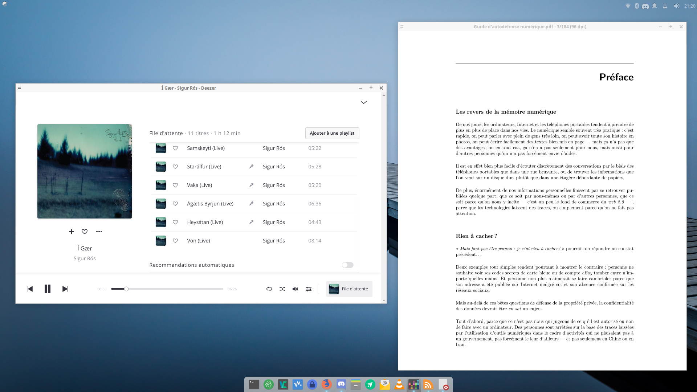
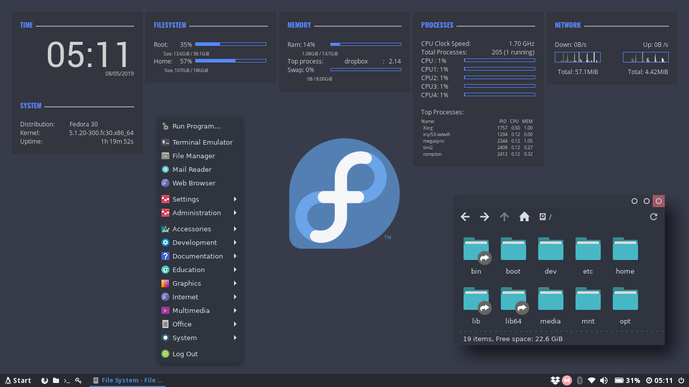
GNOME
GNOME is perhaps the most commonly used Desktop Environment, as it is the default DE of Ubuntu. It provides a polished user interface that is quite different from Windows' UI. It uses GTK4 for theming.
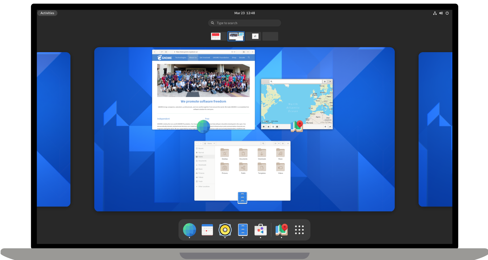
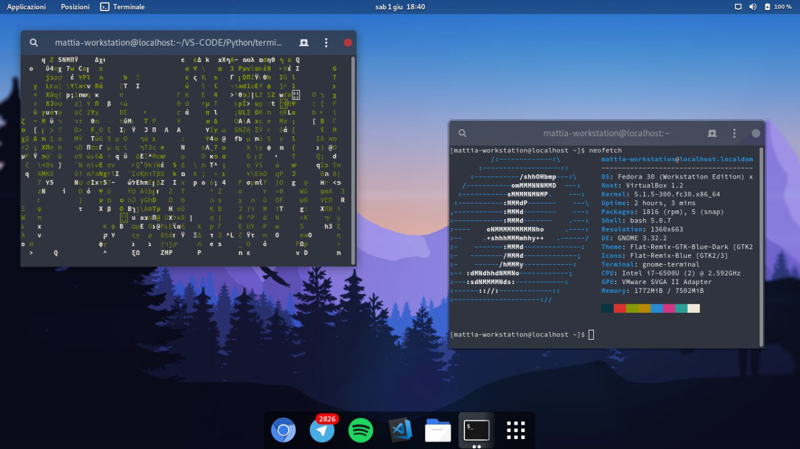
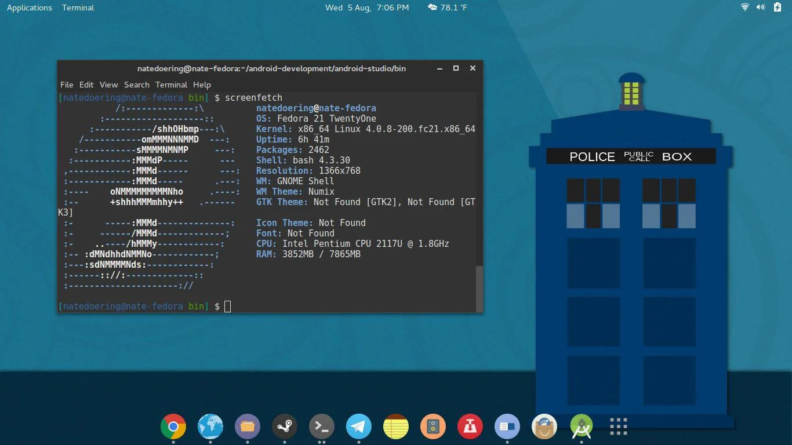
Cinnamon, MATE, LXDE, LXQT etc..
These Desktop Environments are less commonly used, and I would not recommend using them as a beginner since any issues will be hard to debug. Cinnamon and MATE are forks of GNOME3 and GNOME2 respectively, and provide a more traditional computing experience.
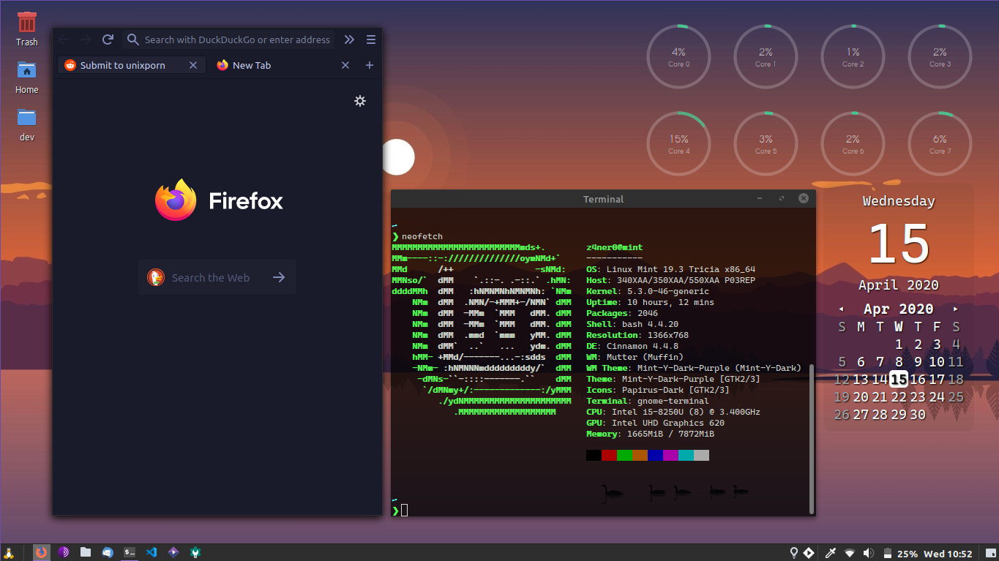
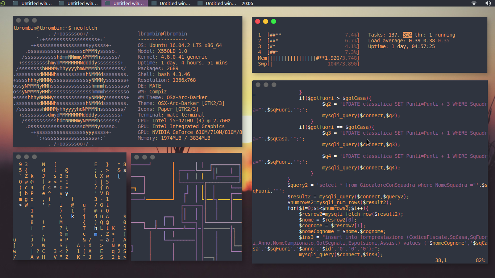
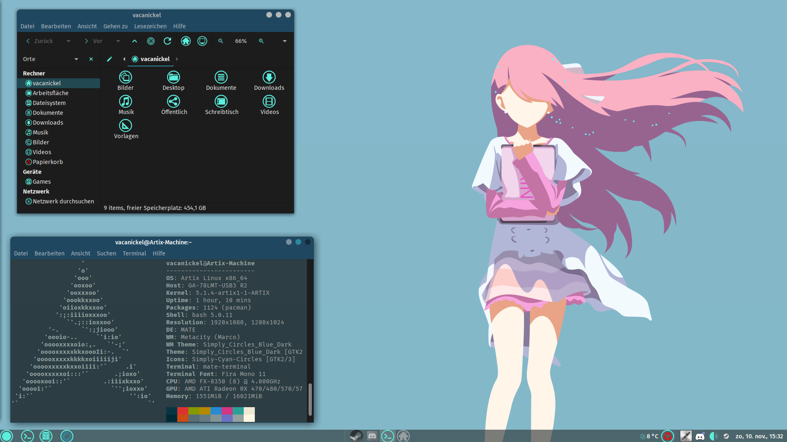
Recommended Distros
Rolling Release
Arch Linux
Arch Linux is perhaps the most widely-used rolling release distro. It boasts a humongous software repository and a very helpful wiki that can resolve nearly all your problems. Its only demerit is that it does not provide a GUI for installation, which can be a bit daunting for beginners.

EndeavourOS
EndeavourOS is Arch Linux repackaged with an excellent GUI installer. It comes with multiple themed desktop environments and WMs, and provides you with all the benefits of Arch minus the arduous installation and configuration process.
Void Linux
Void Linux comes with the super fast Runit init system and the reliable XBPS package manager. It has a TUI installer that simplifies the installation and provides most of the packages you will find necessary. Void is ideal for older machines that have low specs or still use hard drives.
Point Release
Mint
Mint is a very simple to use fork of Ubuntu and it comes with Cinnamon, MATE and XFCE. This distro provides a similar experience to using Windows and is highly recommended for older PCs.

Pop!OS
Pop!OS is System76's linux distro, which is aimed at gamers, STEM students and creative professionals. It provides a neat and user-friendly UI.

Fedora
Fedora is essentially a development version of Red Hat Enterprise Linux. It implements cutting-edge technology like Wayland and Pipewire while offering the same stability as Ubuntu variants.

Advanced Users
Gentoo
Gentoo is a very interesting distro which pushes the user to compile everything from scratch, including the linux kernel. The user is encouraged to set USE Flags to control every bit of every single package and keep bloat to a minimum. It's the perfect distro for intermediate users with powerful computers.

Slackware
Slackware is one of the oldest linux distros still in use. It aims to provide a more UNIX-like experience compared to other linux distros. Installing packages on it is a bit harder than other distros, and while the defaults are user-friendly a beginner might struggle to use it.
NixOS
NixOS is a linux distribution built atop the Nix package manager. Nix is a functional package manager, which makes it immune to problems like dependency hell. It is at the forefront of modern package management, and provides a bunch of nifty features such as being able to define your entire OS in a single file and then being able to reproduce it exactly on another PC just by copying over that file. Functional package management, however, does not obey the Linux Filesystem Hierarchy Standard, which leads to problems. It also has a complicated CLI.
Guix System with nonguix
Guix System is built on top of the GNU Guix package manager, which is a functional package manager similar to Nix with the main difference being that Guix uses Guile Scheme, GNU's official scripting language, instead of a DSL like Nix. It provides all the benefits of NixOS and has a much simpler CLI, but the disadvantages with Guix are that the official repositories package only libre software and that its userbase is quite small.

Disapproved Distros
Ubuntu
Canonical is known for creating strange in-house solutions instead of contribution to existing projects in the linux community. This has lead to Ubuntu featuring a lot of strange quirks that can sometimes interfere with normal work. For example, firefox is packaged as a Snap in the latest version of Ubuntu. We would recommend using Mint instead.
Debian
Debian is a more server-oriented distro, hence using something like Mint or Arch for a personal computer would be recommended instead.
Kali Linux
Kali Linux is just Ubuntu with some pentesting tools pre-installed. Unless you wish to learn pentesting, Kali Linux is not recommended.
Manjaro
Manjaro is a fork of Arch that arbitrarily holds back updates for the sake of "stability". It ends up providing neither the stability of a point-release distro, nor the latest packages of a rolling-release distro. Using vanilla Arch or EndeavourOS instead is recommended.
Procedure Overview
Preparation
- Setting up a LiveCD with Rufus
- Disabling Fast Startup
- Disabling BitLocker
- Shrinking partitions
- Backing up important data
Booting into the LiveCD
- Disabling SecureBoot
- Booting into LiveCD
- Installing the distro into empty space
Post-install
- Fixing the clock
- Checking everything works
- Moving programming-related files to Linux
Preparation
Setting up a LiveCD with Rufus
We will download our selected distro's LiveCD from its website, and then use Rufus to burn it onto a USB drive of a size around 4 GB or greater.

Disabling Fast Startup
Go to Windows Settings -> Choose what the power buttons do and then scroll down to Shut down settings and uncheck the box for "Turn on fast startup".
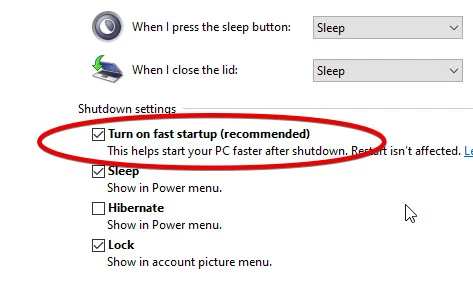
Disabling BitLocker
Control Panel -> System and Security -> Bitlocker Drive Encryption Click on "Turn Off Bitlocker" Just to be safe, make sure to note down your Bitlocker key.

Shrinking partitions
Open diskmgmt.msc and shrink the C:/ or D:/ drive by around 64 GB.
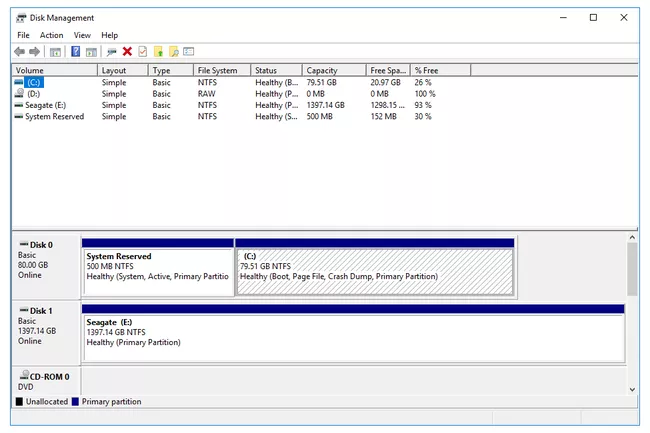
Backing up important data
Create a backup of important data on an external drive.
Booting into the LiveCD
Disabling SecureBoot
Boot and press [F2] to enter BIOS. Go to [Security] tab > [Default Secure boot on] and set as [Disabled]. Go to [Save & Exit] tab > [Save Changes] and select [Yes].
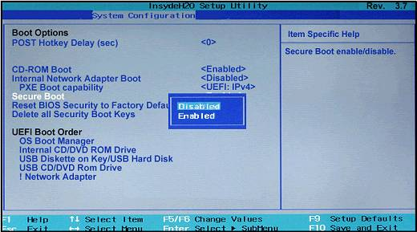
Booting into the LiveCD
Mash the "Boot options" button (usually F10) and pick your USB device as the boot drive.
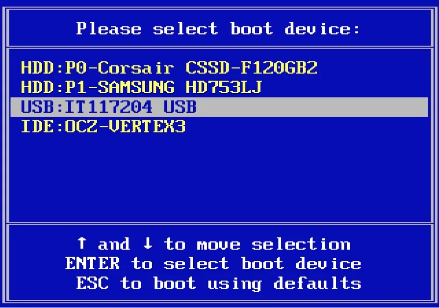
Installing the distro into empty space
When the distro's installer asks you where you want to install it, select the empty space we created. The bootloader should point to the main drive.
Post-install
Checking everything works
Boot into Windows, check that all your data is there, check that you can boot into all OSes, etc.
Fixing the clock
The system clock will point to the wrong time, because of fundamental differences in how linux and windows read time from the system clock. There are distro-specific answers to this problem, but in general you should set Linux time to UTC and let Windows set the time.
Moving programming-related files to Linux
Mount your Windows drive in Linux using a package called ntfs-3g, and then copy or move over your programming related files to Linux.